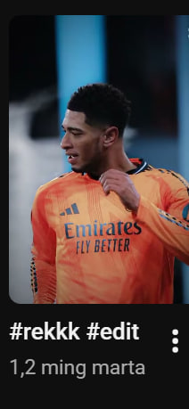

This my you tube account and i will share my stories with you, so please subscribe to my channel and follow me on social media for more updates and behind-the-scenes content.
Welcome to My YouTube Channel




This my you tube account and i will share my stories with you, so please subscribe to my channel and follow me on social media for more updates and behind-the-scenes content.
